开心果 Need Car · 2023-07-16T07:48:00+08:00 · 微信原文
汽车嵌入式中，通信功能扮演着"地基"一样的角色，没有通信功能，也就无从谈论诊断、网络管理、标定等其他功能。其中，算法（Functional algorithm）对通信的依赖，就好比鱼和水。同时，算法对通信信号质量的要求也非常高，如果通信信号异常，将极大的影响着算法信号输出，进而影响车辆功能。输入信号和Functional algorithm关系示意如下：
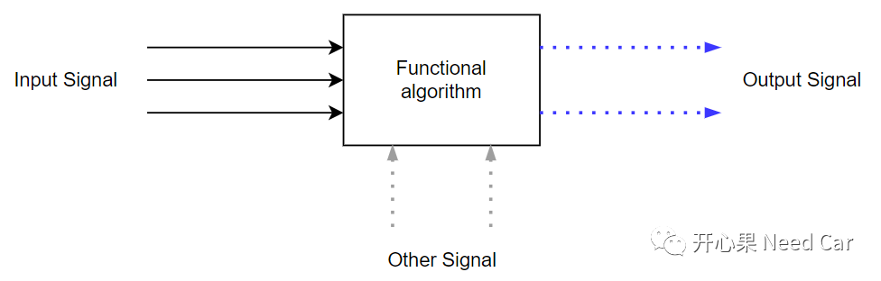
所以，工程上的通信问题，不可掉以轻心。本文分享一个工程通信问题：Signal信号值偶发反转。
1、问题现象
工程开发，各层或者各模块之间需要信息交互，正确的信息交互是功能正常的前提。本文问题中，发现：底层软件（BSW：Basic Software Modules）与上层（ASWC：Application Software Components）接口交互时，出现Signal反转问题。BSW与ASWC接口交互过程示意如下：
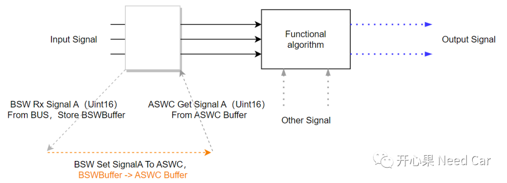
提示：标准的Autosar架构中，BSW和ASWC通过RTE（Run-Time Environment）交互。目前，一些项目，为了沿用之前的模型，并未完全采用Autosar模式开发，因此，信号交互会手动处理，而手动处理可能就不如规范考虑的周全，存在一定漏洞，比如本文。
（一）问题现象
问题出现时，发现在某些时刻，BSW从总线获取的Signal A值与ASWC实际获取的值不匹配，如下所示：
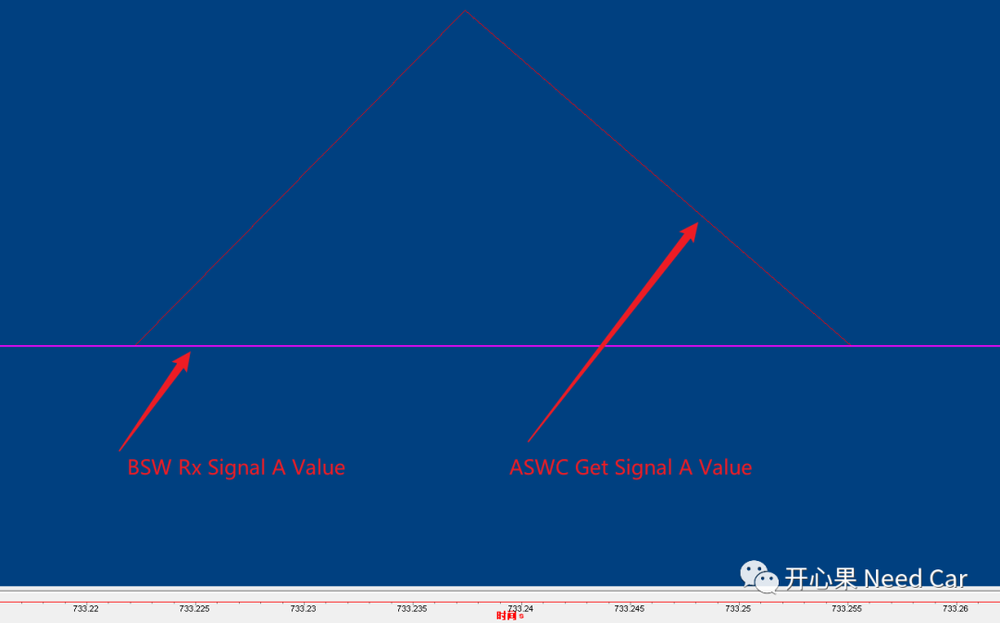
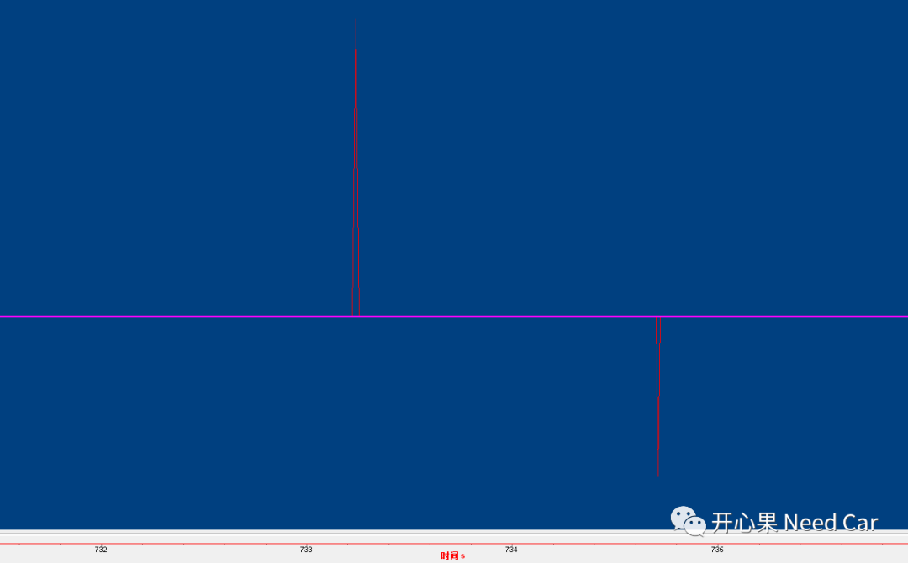
2、原因分析
根因分析之前，先回顾一下信号的传输。一个信号的长度可能在一个字节内，也可能跨字节。如下图，信号AgDataRawSafe_UB只占用一个bit，传输时不跨字节，而AgDataRawSafeRollRate信号长度16bit（2 Byte），传输时跨字节。
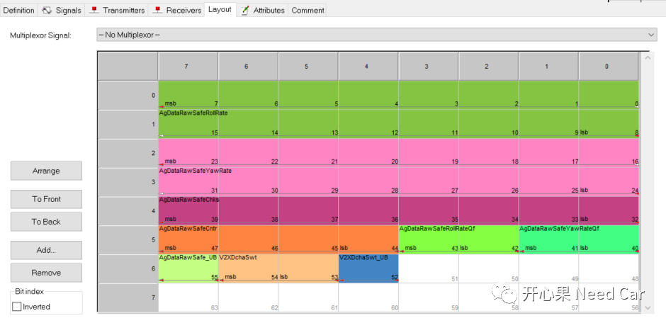
所以，当一个信号长度超过一个byte时，则需要考虑字节序（Byte Order）转换。在通信矩阵设计之初，每帧报文的每个信号字节序需要明确定义，即：Motorola（摩托罗拉格式）或者Intel（因特尔格式）。
Intel模式也称为小端(Little-endian)模式，传输时，低字节在前，高字节在后；
Motorola格式也称为大端(Big-endian)模式，传输时，高字节在前，低字节在后。
通信矩阵（*.dbc文件）中，Motorola信号格式设置如下：
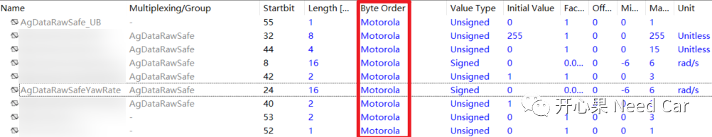
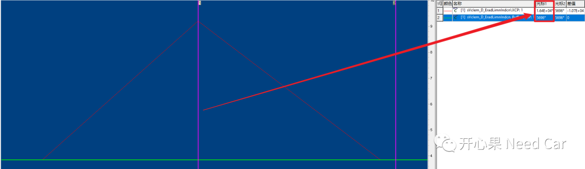
所以，问题定位到了信号字节序处理位置。进一步分析问题发现，工程中，Core2读取信号值（包括信号的Copy动作），Core0进行信号处理（包括信号接收、字节序转换）。
示意如下：
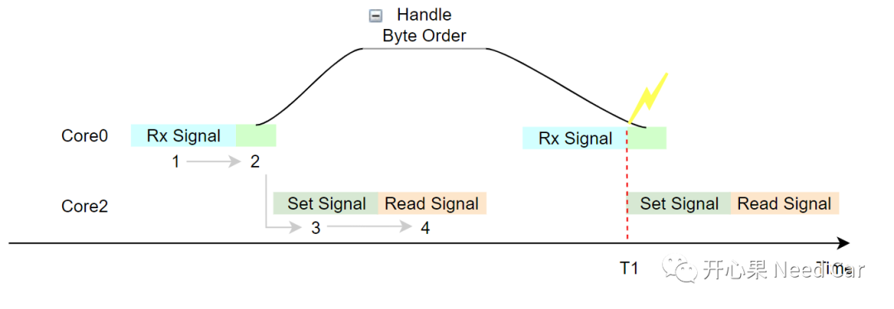
正常工况下：
Core0接收信号并缓存到驱动层，此时数据是原始数据（Raw Data），还未传输给目标上层；
Core0将信号传输给目标上层（eg：COM），读取信号时，本文的Com_ReceiveSignal()接口对Signal进行字节序转换处理，即：0x4016->0x1640；
Core0将信号处理后，Core2将处理后的数据Copy到缓存区（Copy的数据正常，0x1640）；
Core2读取信号值在有效范围，算法正常处理，程序不出问题。
非正常工况下：
Core0接收信号并缓存到驱动层，此时数据是原始数据（Raw Data），还未传输给目标上层；
T1时刻，Core0将信号传输给目标上层（eg：COM），进行Signal字节序转换处理时，Core2恰好过来读取该信号值，由于此时Core0还未有对信号进行字节序处理，依然是原始值（eg：0x4016）,Core2此时读取到的值为0x4016，而不是预期的0x1640。因此，算法识别到信号输入异常，进行异常处理，车辆功能受限。
思考：Core2除了可能读取到未经字节序转换的信号值，还可能读取到0值（中间临时变量）。本文的软件处理过程中，COM内部会有中间变量先缓存原始值，在缓存原始值之前会有清0动作，所以，数据异常可能出现0或者字节序未转换情况。
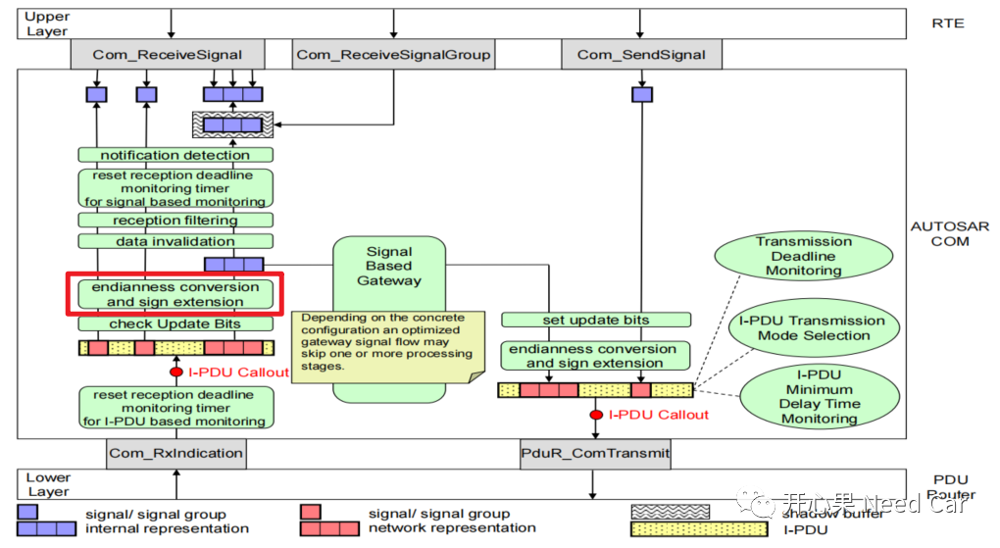
3、解决措施
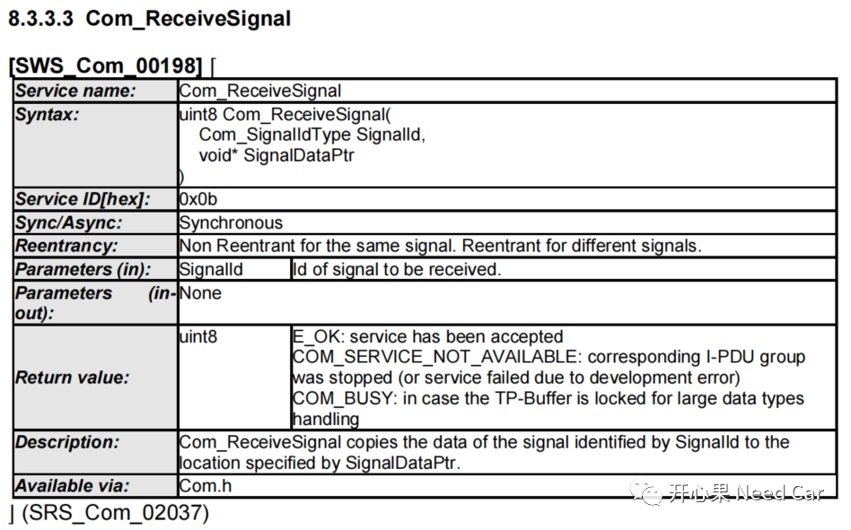
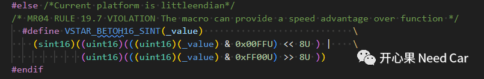
void Handler_Signal_Rx(void){(void)Com_ReceiveSignal(BSWBufferID_Rx, &BSW_Buffer);}
如上代码，动作如下图：
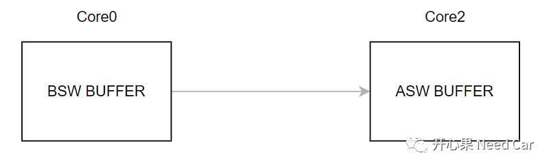
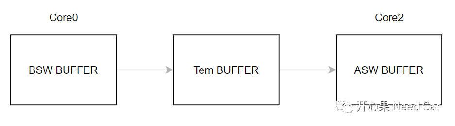
对应到代码实现如下所示：
void Handler_Signal_Rx(void){uint16 temVal = 0x00;(void)Com_ReceiveSignal(BSWBufferID_Rx, &temVal);BSW_Buffer = temVal;}
往期精彩回顾